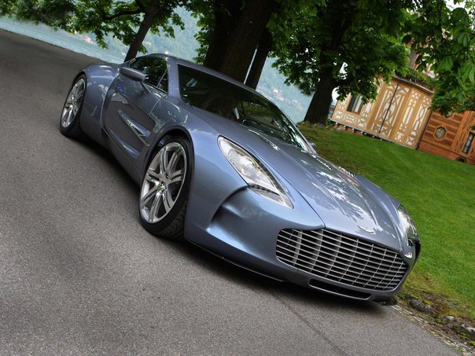
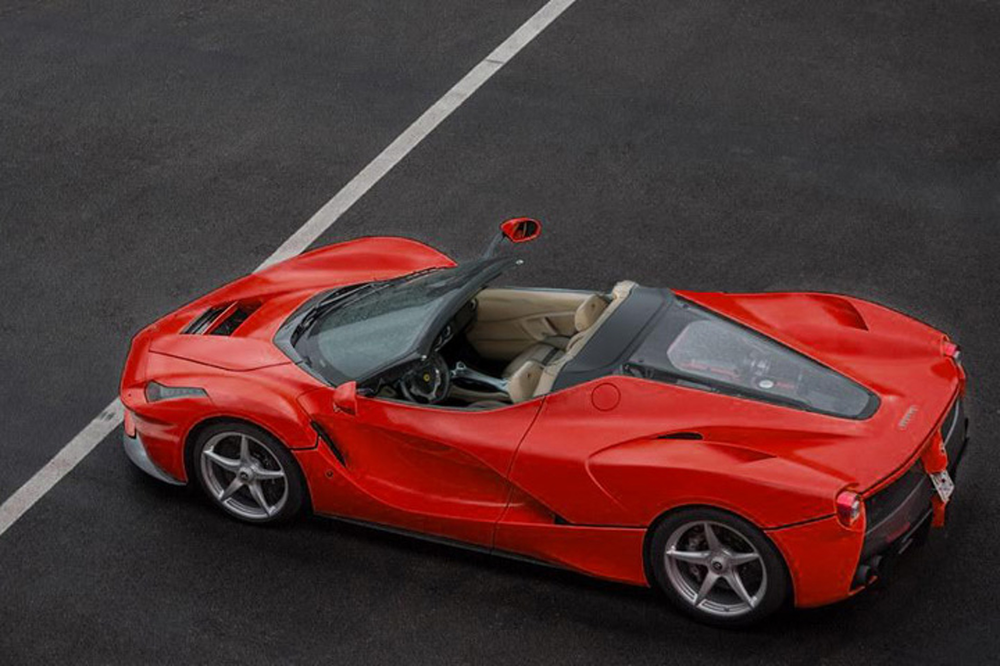
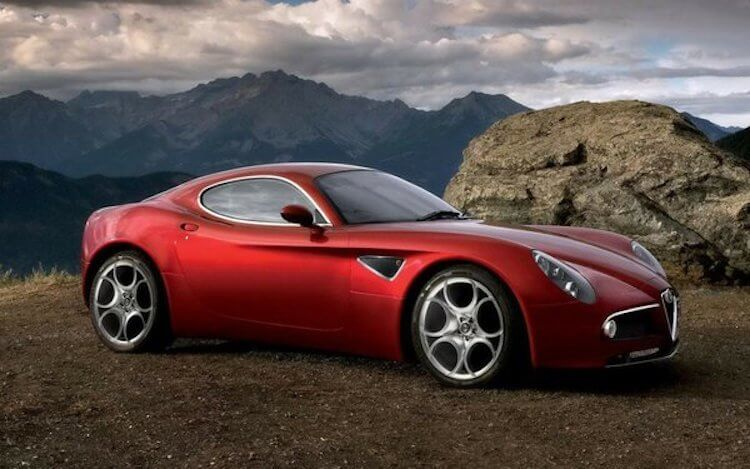
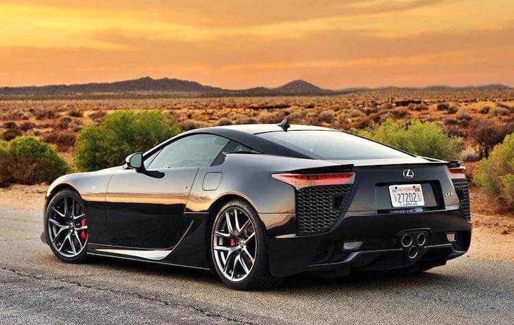
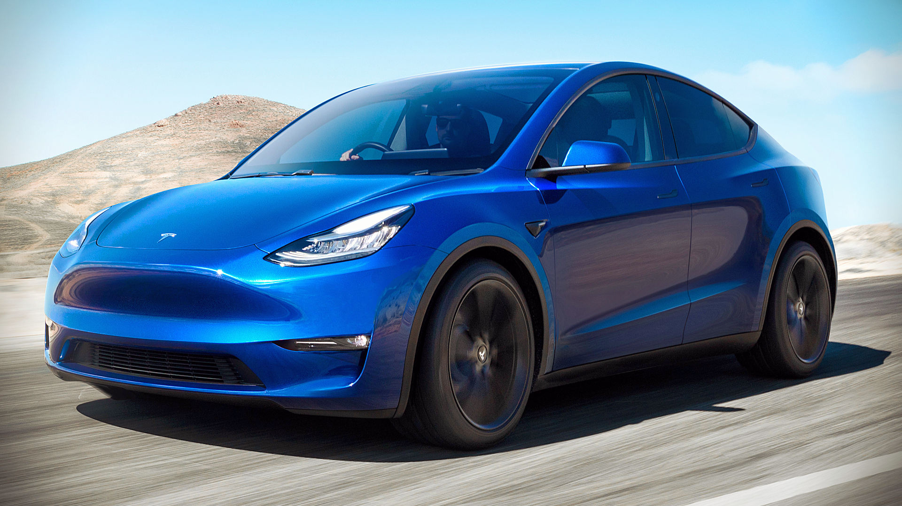
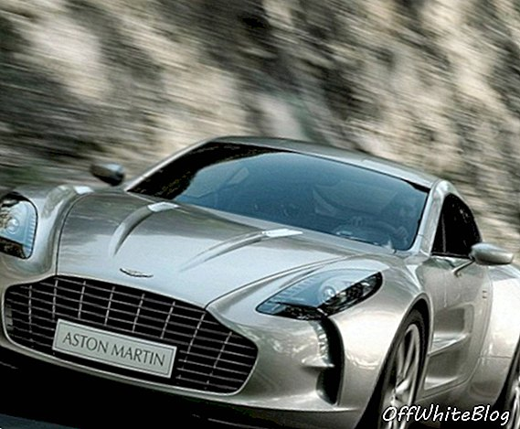
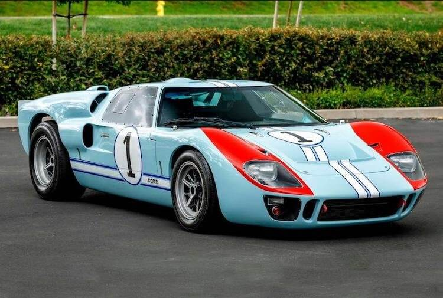
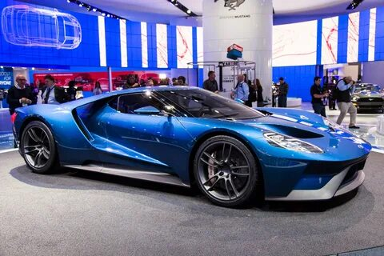

Какие автомобили вы не сможете купить, даже если у вас есть на них деньги
Мир полон роскошный вещей. Те, кто может из себе позволить — покупает их. Другие или копят или просто наблюдают за этим со стороны. Казалось бы, все просто — если у тебя есть деньги, ты может пойти и купить то, что принципе имеет цену. Дополнительно такое рассуждение подкрепляется доводами, что чуть ли не все можно купить за деньги. На самом деле это не так и производители автомобилей это доказывают. Можно прийти с чемоданом денег в салон, скажем, Ferrari, но вам откажут в покупке. Вы просто не сможете купить машину и все тут. Так поступают некоторые марки, и на это у них есть веские причины. В этой статье приведены несколько примеров такого поведения автопроизводителей, которое на первый взгляд кажется странным, но имеет четкое логическое объяснение, или просто исторические корни. Но не бросайте копить на новый Макларен, прежде чем дочитаете до конца. Может быть вы подходите и вам продадут.
 Не все можно купить за деньги. Даже то, что имеет цену.
Содержание
Что нужно, чтобы купить Ferrari
Феррари давно являются символом роскоши и скорости. Марка стала именем нарицательным для целого направления автомобильной промышленности — спорткаров. При этом, некоторые модели этой марки можно было купить только по предварительному заказу и только с личного согласия основатели марки, знаменитого Энцо Феррари.
Последней моделью, покупатель которой лично беседовал с Энцо перед оформлением сделки стала Ferrari F40, выпущенная ограниченным тиражом к сорокалетнему юбилею компании. Одну из таких машин получил гонщик Жан Алези в рамках контракта с гоночной командой Ferrari в Формуле-1. Несколько месяцев назад он продал ее за миллион долларов. Цена спорткара во многом обусловлена именно условиями приобретения автомобиля.
 Ferrari LaFerrari
Ferrari LaFerrari
Компания до сих пор продает топовые версии только проверенным и максимально лояльным клиентам. Особенно это касается ограниченных серий, вроде гиперкара LaFerrari. Чтобы купить эту машине надо было являться фанатом марки и уже иметь минимум пять машин из Маранелло.
Даже если этот первый этап отбора вы прошли, все равно вам могли отказать в сделке. Решение о продаже даже будь у вас 20 Феррари каждый раз принималось индивидуально.
Какие машины покупают в кризис россияне, и что ждёт отечественный автопром.
Существует даже история, согласно которой в 2016 году бывший на тот момент американский автогонщик Престон Хенн отправил Сержио Маркионе, который в то время руководил группой Fiat-Chrysler (в нее входит Ferrari) письмо. В нем он изложил свое желание купить LaFerrari версии Spider (открытая версия) и приложил чек с суммой депозита. В итоге ему отказали и он подал в суд на компанию.
 Тот самый LaFerrari Spider из-за которого был скандал.
Он посчитал, что итальянская компания нанесла ущерб его деловой репутации. Позде он отозвал свой иск, сказав, что хотел только привлечь внимание к этой истории. В итоге, через год он скончался в возрасте 86 лет, но так и не получил LaFerrari в свою коллекцию.
Ferrari не позволяет покупать свои машины сотрудникам компании, кроме пилотов команды в Формуле-1 и руководства, которое получает их просто так. Некоторые исключения есть, но они единичны. Делается это из-за того, что покупатели очень долго ждут свои штучные машины и будет некрасиво, если им придется стоять в очереди за сотрудниками компании
Самая редкая Alfa Romeo
Другая легендарная итальянская марка Alfa Romeo тоже имеет в своем модельном ряду машину ”со сложностями”. Она получила название Alfa Romeo 8C Competizione и продается только в разрешение клуба фанатов марки.
10 самых дорогих серийных автомобилей в мире
Именно эта модель занимает особое положение среди других шедевров компании из-за того, что их было выпущено всего 1000 штук (500 родстеров и 500 купе) с 2007 по 2010 год и больше они не выпускаются.
 Вроде ничего особенного, но так просто вам ее тоже не продадут.
Естественно такая машина на складе не застаивается и все они были проданы очень быстро. Если у вас такая и вы найдете на нее покупателя, сначала вам надо будет получить одобрение официального фан-клуба Alfa Romeo. Это даже не дань традициям, или джентльменское соглашение, а конкретные обязательства. Его брали на себя все покупатели машины и подписывали соответствующий документ.
Тот, кто все же сможет купить такую машину должен принимать такие же правила повторной перепродажи. То ли поэтому, то ли потому, что машина очень хороша, чтобы ее продавать, предложение на нее крайне мало.
Действительно ли электромобиль — автомобиль будущего?
Бестолковое ограничение на продажи Lexus
В отличии от предыдущих машин, на продажу которых были наложены ограничения, но они в итоге все были распроданы, японская Lexus сделала большую ошибку. В 2009 году она представила Lexus LFA с двигателей V10 мощностью 550 лошадиных сил и углепластиковым монококом. Машину собирались выпустить тиражом всего 500 экземпляров, но сколько выпустили в реальности сказать сложно. Во многом из-за конфуза, который произошел с этой моделью.
Изначально планировалось, что на машину будет большой спрос и было введено правило, что автосалоны получали автомобиль только под конкретного клиента. В итоге, правило быстро отменили. А заодно отменили правило ”один автомобиль в одни руки”. То есть, купить их можно было совершенно свободно.
 Lexus LFA, вроде, и выглядит неплохо, но какой-то он проходной и без изюминки. А после ограничений он вообще оказался никому не нужен.
Поговаривают, что на складах дилеров в США до сих пор есть несколько нераспроданных Lexus LFA. Ажиотажа не получилось и компания зря боялась спекуляции. Ее автомобиль просто оказался никому не нужен, раз за 10 лет она не смогла распродать всего 500 LFA.
Сколько зарплат должен стоить автомобиль?
Почем нельзя купить Tesla
Оказывается, вам могут не продать даже такой достаточно массовый и в некоторой роде банальный в наше время автомобиль, как Tesla. Говорят, что производитель ввел ограничение модели Model Y для тех клиентов, которые раньше были недовольны автомобилями марки и возвращали их. Неважно почему они так делали. Это мог быть производственный брак или ”не подошел размер” — результат был один.
Более того, если при покупке или обращении по гарантии покупатель был заподозрен в обмане, его банили на год и он не мог вообще ничего купить у американской компании. Вот как бы вы отнеслись к такому «бану»? Расскажите в нашем Telegram-чате.
 Мне эта машина не нравится, но спрос на нее настолько велик, что его надо регулировать.
Такие меры были вызваны большой популярность кроссовера, и его маленькими объемами производства. Даже если он ломался и его надо было сдавать производителю его не меняли на новый, а просто возвращали деньги из-за того, что за машинами была большая очередь. Нельзя было заставлять клиентов ждать еще дольше.
Tesla экономичнее обычной машины или все же нет?
Кому нельзя покупать Aston Martin
”Ох уж эти журналисты…” — наверное, именно так думают в руководстве знаменитого британского Aston Martin. Компания, которая долгое время ассоциировалась с автомобилями Джеймса Бонда выпустила ограниченную серию суперкара Aston Martin One 77 в 2012 году. Тираж машины соответствовал названию модели и составил 77 экземпляров. Стоимость машины составляла полтора миллиона евро, но ее не мог купить ни один журналист даже с такими деньгами.
 Хочешь купить эту машину? А не журналист ли ты часом?
Причина по которой компания не предусматривала никаких тест-драйвов остается загадкой, но правило было строгим. Естественно, ребята из не менее британского Top Gear не были бы собой, если бы не попробовали получит машину. Они нашли обходной путь и договорили о съемке с владельцем дубайского автосалона. Естественно, осталось тайной, пришлось ли хозяину машины как-то пострадать из-за этого, но факт остается фактом — журналистам ”вход воспрещен”.
Хочу купить Ford, но не могу
В завершение речь пойдет о Ford. Но это не какой-то там Focus, Fiesta или даже Excursion, а тот самый легендарный Ford GT, первую версию которого я до сих пор считаю одной из красивейших машин в истории.
Новое поколение машины сильно переделали со времен оригинала, хотя, фирменный стиль в ней все равно угадывается. Выпустили ее в 2016 году и наложили на покупателей ряд ограничений, которые закрепили юридически.
 Легендарный Ford GT 40.
Главным правилом для всех покупателей было то, что они не могли продавать машину раньше, чем через два года после покупки. Так компания боролась со спекуляцией. Было бы некрасиво, если бы на следующий день после премьеры где нибудь в Лос-Анджелесе на столбах появились объявления ”Продам Ford GT 2016. Не бит, не крашен. Без пробега по США”. Шутки шутками, но компания действительно старалась продавать машину только конечным пользователям.
Как собака в машине влияет на стиль вождения
Даже если ты был готов подписать бумагу и не собирался продавать автомобиль никогда, все равно перед покупкой надо было заполнить анкету и надеяться, что тебе позволят совершить покупку. В частности надо было ответить, как часто ты планируешь пользоваться автомобилем и какие Ford у тебя были до этого. Надо было даже рассказать насколько ты активен в социальных сетях. При этом, правильного ответа не было и все рассматривалось индивидуально.
 В новом (относительно) Ford GT угадываются очертания старого.
Всего было выпущено 250 Ford GT нового поколения, а владелец 48-машины решил нарушить условия продажи и продал автомобиль на аукционе почти за 2 миллиона долларов, что в четыре раза превышало начальную цену. В итоге, компания Ford подала в суд и отсудила крупную сумму у бывшего владельца GT и аукционного дома. Как говорится, чтобы не повадно было.